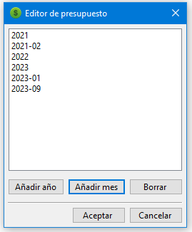
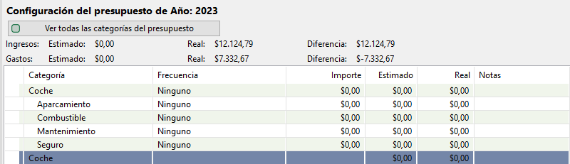

MMEX permite crear un presupuesto para un año y/o para un mes. El objetivo es poder comparar lo que finalmente hizo y lo que tenía previsto hacer.
Los presupuestos pueden mostrarse como años del calendario o como ejercicios económicos. Use el diálogo de ajustes para establecer el inicio del año financiero y cualquier otro ajuste requerido.
Para añadir un nuevo presupuesto, en el árbol de navegación haga clic derecho en 'Organizar presupuesto' y añada un presupuesto mensual o anual.
Después de añadir un año, haga clic en él para mostrar el panel de creación de presupuestos.
Se puede editar cada categoría haciendo doble clic en la categoría que quiera editar.

Este será el presupuesto para ese año. Después, se pueden derivar de ese posteriores meses y/o años.
Para cada categoría principal se muestra un resumen del total de dicha categoría.
El resumen del total de cada categoría se puede activar o desactivar con el ajuste del menú: Vista → Informe de categorías del presupuesto: con resúmenes.
Con los informes de la categoría "Presupuestos" puede comparar cómo gastó el dinero respecto a su presupuesto establecido.